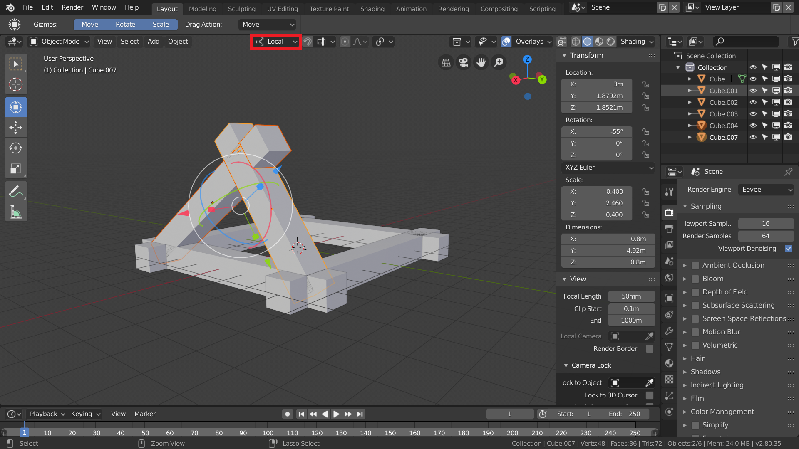
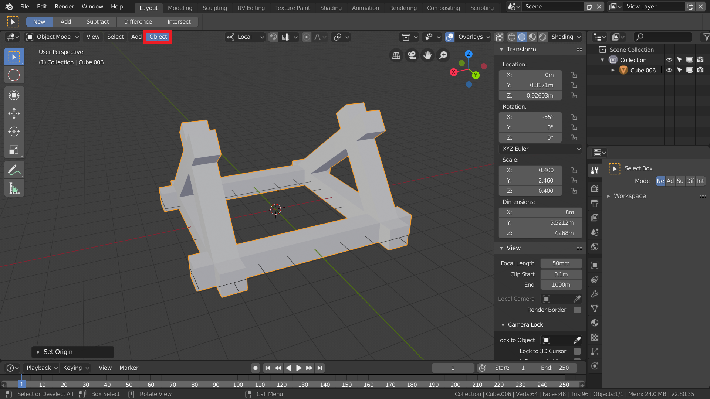
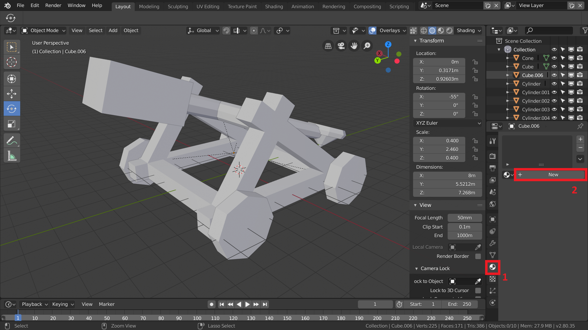
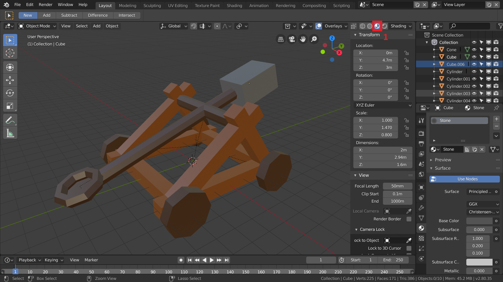

Übung 1 - Basics
Arbeiten mit Primitiven
Das folgende Kapitel behandelt die Grundlagen der Blender-Bedienung. Es wird das Arbeiten im 3-dimensionalen Raum, das Erstellen und Verändern primitiver Objekte, die Hierarchieanordnung mit Pivot und grundlegende Materialzuweisung geübt. Dazu wird über den Verlauf der Übung ein Katapult erstellt.
1. Vorbereitung
Für Laptopnutzer: Um den Übungen folgen zu können und Blender ohne Umstände zu nutzen wird in der Regel eine Mouse benötigt. Sollte Blender bei euch ruckeln und eine sehr schlechte Performance liefern, solltet ihr mit einem Rechtsklick auf die Blender.exe eure Onboard-Grafikkarte auswählen.
- Für Laptops ohne Num-Pad: Das Num-Pad ist für das Arbeiten in Blender wichtig und sollte daher wie folgt emuliert werden.
Edit→Preferences→Input→Emulate Numpad. Durch die Emulierung könnt ihr eure normalen Zahlen-Tasten1,2,3etc. anstelle der Zahlen des Num-Pads benutzen.

- Startet Blender.
- Führt nun zuerst, je nach eigenem Setup, die oben genannten Änderungen durch.
Die Benutzeroberfläche von Blender ist individuell anpassbar und kommt mit 10 vorgefertigten Layouts, so genannten Workspaces (
Layout,Modeling,Sculpting,UV Editingetc.). Für die üblichen Arbeitsschritte gibt es optimierte Workspaces, die sich über die Reiter direkt neben der Menu Bar wechseln lassen. Standardmäßig ist der Workspace “Layout” eingestellt.Blender ist zusätzlich in rechteckige Fenster unterteilt, die man anhand der abgerundeten Ecken unterscheiden kann. Durch
Linksklickauf den Fensterrand (Mousezeiger ändert sich in Doppelpfeil) bei gleichzeitigem Halten und Ziehen lässt sich jedes Fenster in seiner Größe anpassen. DurchKlickin eine der Ecken (Mousezeiger ändert sich in ein Fadenkreuz) kann man durch Ziehen entweder Fenster teilen oder wieder zu einem einzigen verbinden.In jedem Fenster befindet sich außerdem in dessen linken-oberen Ecke ein Dropdown-Menu über welches der angezeigte Editor Type gewechselt werden kann. Dazu zählen z.B. 3D-Viewport, Timeline, Outliner, UV- und Graph Editor.

- Um die Start-Szene zu bereinigen drückt ihr zunächst die Taste
A, um alle Objekte auszuwählen, und anschließendXum die ausgewählten Objekte zu löschen.
Um euch im 3-dimensionalen Raum zu bewegen, braucht ihr die Mittlere Maustaste um euch zu drehen und Shift + Mittlere Maustaste um euch zu bewegen.
> Die Mausfunktionen für den Bereich, in dem sich die Maus momentan befindet, werden auch in der Fußzeile von Blender angezeigt.
2. Gerüst
- Im 3D-Viewport könnt ihr über die Schaltfläche
Addoder mit dem ShortcutShift + Aneue Objekte hinzufügen. Wählt imAdd Menu→Mesh→Cubeum einen Würfel der Szene hinzuzufügen.

- Drückt
Num die Sidebar aufzurufen. Dort könnt ihr, unter anderem die Position, Rotation und Skalierung eurer ausgewählten Objekte einsehen und ändern.

- Erstellt insgesamt vier Würfel und skaliert, rotiert und positioniert sie passend als viereckiges Grundgerüst. Im Menü links könnt ihr auf die verschiedenen Transformationstools zugreifen.
Zur Transformation von Objekten können auch die Shortcuts
G(Verschieben),R(Rotatieren) undS(Skalieren) verwendet werden. Durch anschließendes Drücken vonX,YoderZkann die Transformation auf die jeweilige Achse beschränkt werden.

- Stellt anschließend zwei Quader als Aufhängung gegeneinander.
Vom globalen ins lokale Koordinatensystem zu wechseln kann manchmal sehr hilfreich sein.

- Wählt beide Quader der Aufhängung aus und dupliziert sie mit
Shift + D. Positioniert die duplizierten Objekte auf der anderen Seite des Gerüsts, sodass die Aufhängung für den Wurfarm fertig ist.
Mit gedrückter Shift-Taste könnt ihr Objekte zur bisherigen Auswahl hinzufügen oder abziehen.
ACHTUNG: Wenn ihr Objekte dupliziert und statt mit der linken Maustaste die Position zu bestätigen die rechte Maustaste verwendet um den Vorgang abzubrechen, habt ihr das Duplizieren nicht abgebrochen, sondern die Objekte an die selbe Position dupliziert, wie die ursprünglichen Objekte. Dadurch entsteht schnell doppelte Geometrie, die man unbedingt vermeiden sollte. Wenn ihr den Vorgang des Duplizierens rückgängig machen wollt, drückt stattdessen Strg + Z nachdem ihr bestätigt habt.

Wenn ihr mit eurem Grundgerüst zufrieden seid, solltet ihr die Objekte zu einem einzigen Objekt verbinden. Wählt dafür alle Objekte des Gerüsts aus und drückt anschließend
Strg + J.Der Origin eures Objekts ist nun an der Position des Origins des zuletzt ausgewählten Objekts vor dem Zusammenfügen. Um ihn wieder in die Mitte eurer Geometrie zu bekommen, wählt ihr im Menü
Object→Set Origin→Origin to Geometry.
Es gibt unterschiedliche Möglichkeiten den Pivot anhand von Geometrie oder durch den 3D-Cursor zu verschieben. Probiert einfach mal damit herum und schaut euch die Ergebnisse an.
3. Wurfarm
Erstellt vorerst einen Wurfarm, der waagerecht in der Szene liegt.

- Rotiert den Zylinder, sodass er waagerecht liegt und skaliert ihn anschließend in der Länge.
Wann immer ihr eine Aktion durchführt, erscheint ein extra Menü(2) für die jeweilige Aktion in dem ihr die genauen Zahlen eintragen könnt. Sobald ihr eine andere Aktion durchführt verschwindet das Menü für die bisherige Aktion und kann auch nicht wieder aufgerufen werden.

- Erstellt am einen Ende des Wurfarms eine Halterung für Steine, die geschleudert werden sollen. Nutzt dafür einen Kegel und einen Torus.

Als ein Gegengewicht könnt ihr einfach einen neuen Cube benutzen.
Um den Wurfarm zu vervollständigen fügt ihr noch eine Achse hinzu, die waagerecht im rechten Winkel zu eurem Wurfarm liegt und lang genug ist, um die beiden Aufhängungen zu verbinden.
Erstellt nun eine geeignete Hierarchie, indem ihr mit
Ctrl + Poder dem Kontext-Menü mit derrechten Maustastefür die Objekte Parents hinzufügt.
Die Halterung für die Steine und das Gewicht sollte sich mit dem Wurfarm mitbewegen, der Wurfarm mit der Achse und die Achse mit dem Gerüst.
4. Räder

Erstellt Räder mit 4 weiteren Zylindern und positioniert sie passend am Grundgerüst.
Denkt daran auch die Räder passend in eure Hierarchie einzubauen.
5. Material

Wählt rechts im Properties-Panel dem Tab “Material”(1) aus.
Erstellt mit “New”(2) ein neues Material.

Dabei erstellt Blender automatisch einen Principled Shader, an dem uns vorerst nur die “Base Color” interessiert.

Um eure zugewiesenen Materialien zu sehen, stellt eure Display-Methode auf LookDev(1).
Erstellt passende Materialien für alle eure Objekte, indem ihr jeweils die Base Color des Principled Shaders verändert.
Aufgabe
- Stellt euer Katapult fertig und fügt ein paar extra Details wie Steine als Munition, Dübel in den Rädern und Co. hinzu.
Ressourcen & Tutorials zum Thema
| Art/Länge | Titel | Thema | Quelle |
|---|---|---|---|
| je 2-10min | Blender 2.8 Fundamentals | Interface & Basics | YouTube - Blender (offizieller Kanal) |
| Blender 2.8 Beginner Tutorial - Part 2: Interface & Navigation | Interface & Basics | YouTube - CG Boost | |
| Beginner Blender Tutorial - Part 1 | Interface & Basics | YouTube - Blenderguru | |
| Blender Reference Manual | Offizielle Blender Dokumentation | ||
| blenderartists.org - Support | Größtes Blender Forum (englisch) für Fragen und Support |
Gelerntes
| Funktion | Kontext | Shortcut |
|---|---|---|
| Alles Auswählen | Object Mode | A |
| Löschen | Object Mode | X |
| Objekte Einfügen | Object Mode | Shift + A |
| Number Panel | Object Mode | N |
| Translate | Object Mode | G |
| Skalieren | Object Mode | S |
| Rotieren | Object Mode | R |
| Achsenwahl | Object Mode | X, Y, Z |
| Duplizieren | Object Mode | Shift + D |
| Zur Auswahl hinzufügen | Object Mode | Shift + Auswahl |
| Objekte verbinden | Object Mode | Ctrl + J |
| Parenting | Object Mode | Ctrl + P |